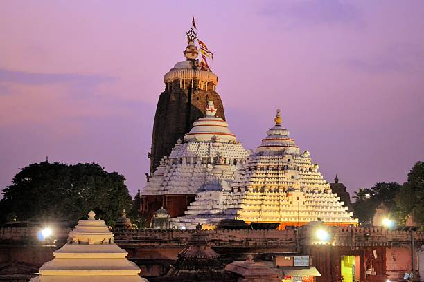
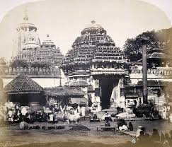
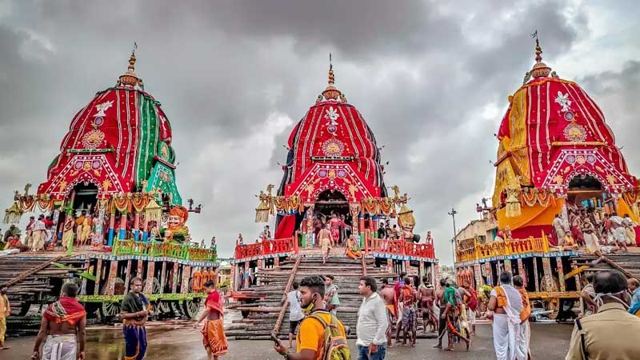
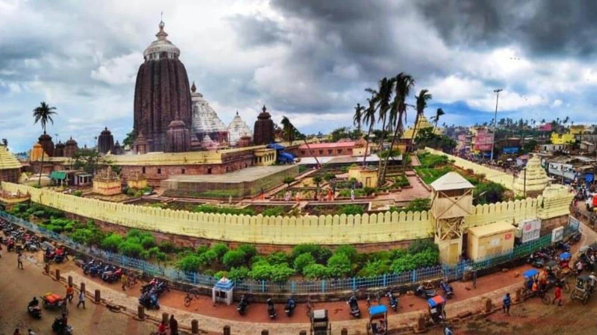
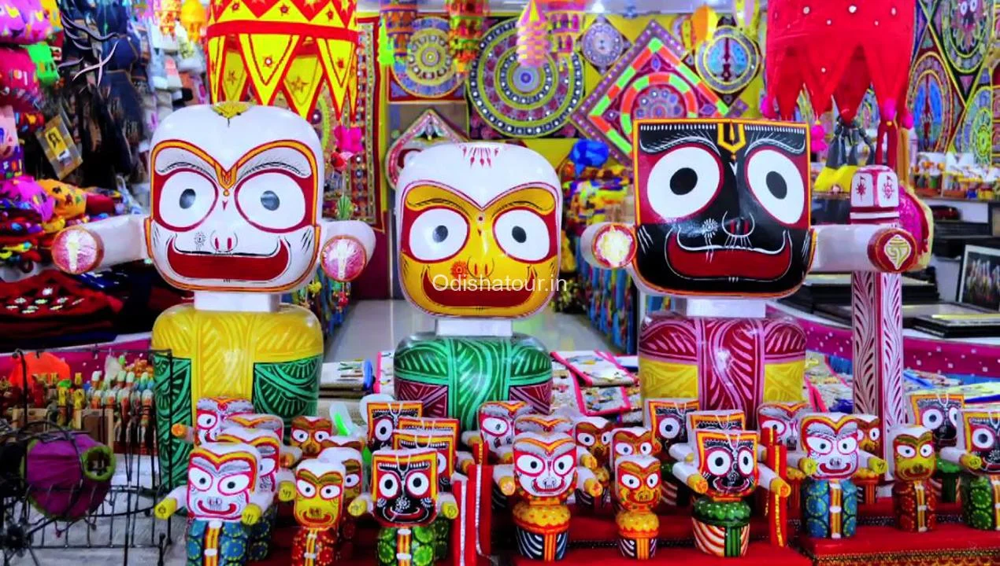

.svg)
About
Puri, also known as, Jagannath Puri, is a coastal city and a municipality in the state of Odisha in eastern India. It is the district headquarters of Puri district and is situated on the Bay of Bengal, 60 kilometres (37 mi) south of the state capital of Bhubaneswar. It is home to the 12th-century Jagannath Temple and is one of the original Char Dham pilgrimage sites for Hindus.
History
Puri, located in Odisha, is an ancient city known for the revered Jagannath Temple, a major Hindu pilgrimage site. It has historical significance dating back to at least the 3rd century BCE, with mentions in ancient texts. Puri became prominent under the Eastern Ganga dynasty (12th century), when King Anantavarman Chodaganga Deva built the present Jagannath Temple. The city has been a center of Vaishnavism and the famous Rath Yatra (chariot festival) for centuries. During British rule, it served as a summer retreat and an important religious hub. Today, Puri remains a spiritual and cultural landmark, attracting millions of devotees and tourists.
Best Time to Visit
The best time to visit Puri is between October and February as the weather during this period is pleasant and cool, making it ideal for exploring the sights, including the Jagannath Temple, without extreme heat or heavy crowds; this is considered the winter season in Puri
Key Atrractions
Puri, a city in Odisha, India, has many attractions, including its beaches, temples, and handicrafts.
Temples:
- Shree Jagannath Temple
- Gundicha Mandir
- Sakshigopal Temple
Other attractions:
- Chilika Lake
- Pipli
- Swargadwar Market
- Puri Markets
Handicrafts
Puri is famous for its rich tradition of handicrafts, which reflect the artistic heritage of Odisha. Some of the most well-known handicrafts from Puri include: Pattachitra Painting – Intricate, mythological scroll paintings on cloth or dried palm leaves, depicting stories of Lord Jagannath and other deities. Applique Work (Pipili Chandua) – Vibrant fabric-based decorative art used for temple umbrellas, canopies, and wall hangings. Sand Art – Unique sculptures made from sand, pioneered by famous artists like Sudarsan Pattnaik on Puri Beach. Stone and Wood Carving – Exquisite carvings used in temples and idols, showcasing Odisha's ancient sculpting skills.
Map